В огромном количестве игр про военную технику немаловажную роль играет упреждение. Обычно это остается на плечах игрока - где-то вы методом проб и ошибок развиваете навык сами, где-то вам помогает кружочек. Но в любом случае это весьма сложно - если вы конечно не андроид.
А андроидам полезно знать, как это упреждение вычислять. Хотя в этой статье и не рассматривается задача поиска упреждения в трех измерениях, на плоскости веселья будет не меньше.
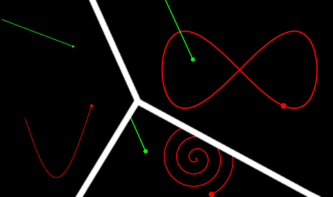
Как вы уже наверняка поняли, эта публикация посвящена стрельбе на упреждение по движущемся на плоскости объектам. Тема несложная, поэтому и высоких материй вы тут не встретите. Если же три измерения - это ваш случай, то на хабре уже рассматривали похожую тему: Вычисляем баллистические траектории в играх.
Работать будем как всегда в годо, а именно Godot v4.1. Начнем с исследования обычного квадратного уравнения и его параболы, закончим численным решением задачи в общем виде, по пути не забыв про приятное векторное решение. Уверен, будет интересно!
Для начала рассмотрим наиболее простую и распространенную задачу: цель, как и снаряд, движутся равномерно и прямолинейно, то есть с постоянными векторами скорости. Так же давайте сразу отбросим тривиальный вариант, когда стрелок и цель в начальном положении находятся в одной точке и примем расстояние в начальный момент времени строго положительной величиной.
Обычно задача состоит только в том, чтобы найти направление выстрела и попасть в цель, поэтому будем считать что нам дано все, кроме этого самого направления. Изобразим на рисунке начальное положение системы:
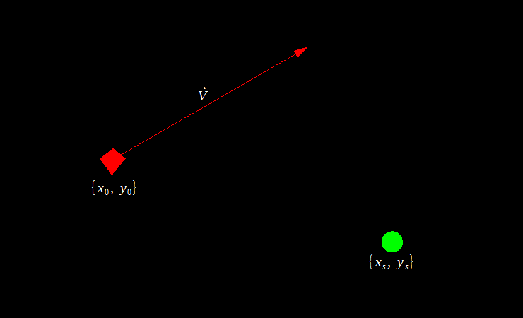
Начальное состояние системы
Уравнения координат цели будут выглядеть таким образом:
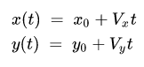
Тут все величины известны, поэтому мы можем в любой момент времени узнать, где находится цель. А вот с уравнениями координат снаряда не все так гладко, ведь нам неизвестен угол. Можно, конечно, записать уравнения с неизвестным, приравнять координаты снаряда и цели и попробовать решить получившеюся систему, но это даже звучит противно. Тем более есть варианты гораздо проще и изящнее. Рассмотрим два - алгебраический и геометрический.
Начнем с алгебраического. Идея прозвучит парадоксально, но чтобы найти угол, от него надо сначала избавиться. Мы как бы выстрелим сразу во все стороны: тогда нам не придется учитывать направление. Для этого вместо прямой будем рассматривать окружность с центром в позиции стрелка и радиусом
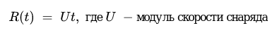
Эта окружность - «фронт» всех возможных снарядов, так что если в какой то момент времени расстояние от стрелка до цели сравняется с радиусом «фронта», это будет означать поражение цели каким то снарядом. Останется только найти этот снаряд, то есть направление выстрела:
См. Есть пробитие - вычисление по окружности.gif
Итак, найдем расстояние от стрелка до цели и приравняем его к радиусу «фронта»:
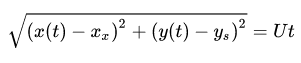
После подстановки значений x(t) и y(t) и упрощения выражения получим уравнение:
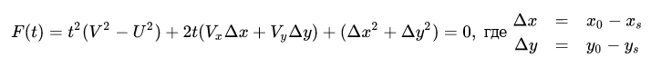
В котором многие могут увидеть некоторые векторные операции, но векторами будем баловаться позже. Замечу, что в левой части стоит разность именно квадратов расстояния и радиуса, так что оценивать по этой величине расстояние нельзя. На самом деле это уравнение можно получить многими способами, но я выбрал этот потому что он пригодится и позже, но пока не об этом.
Полученное уравнение, вообще говоря, не всегда квадратное и даже не всегда линейное. Но пока давайте предположим, что a = V2 - U2 ≠ 0 и перед нами обыкновенное квадратное уравнение. Так как мы ищем время, положим t ⩾ 0. Решать уравнение аналитически я не вижу смысла, поэтому лучше исследуем его на предмет всяких интересностей.
Рассмотрим случай, когда дискриминант этого уравнения положителен D > 0. Тогда существует два вещественных решения, которые обозначим через:
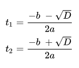
Разобьем анализ на два случая - отрицательный и положительный старший коэффициент. Для начала положим a > 0. Так как существуют действительные решения, они подчиняются теореме Виета:
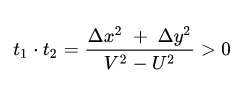
Из которой видно, что корни в нашем случае имеют одинаковый знак, а это значит, что t2 нас фактически не интересует - ведь он либо отрицателен (тогда и t1 < 0), либо больше первого (лучше поразить цель раньше, не так ли?). Тогда искомое время будет равно t1.
Теперь пусть a < 0. Снова применим теорему Виета:
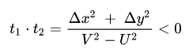
И увидим, что на сей раз произведение корней отрицательно, а значит их знаки уже различны, что, однако, даже лучше - ведь среди них один точно окажется положительным. Взглянув на формулы корней увидим, что таковым всегда будет снова t1, так как в силу a < 0 он больше t2.
Таким образом, нам в принципе не важно значение корня t2 и мы даже не будем его вычислять. Однако перед тем как перейти к коду, рассмотрим еще один интересный факт.
Пусть теперь дискриминант этого уравнение отрицателен D < 0. Это означает, вся парабола y =F(x) лежит с одной стороны от оси OX, а так как c = Δx2 + Δy2 > 0 то она находится в верхней полуплоскости, а значит смотрит "рогами" вверх, то есть a > 0.
Получаем занимательный факт: если нет решений, то скорость цели больше скорости снаряда. Обратное, вообще говоря, неверно. Если угодно, назовем это необходимым условием отсутствия решения.
Так вот, это означает, что если скорость снаряда больше скорости цели (т.е. a < 0), то решения уравнения всегда существуют (D > 0) и в силу рассуждений выше одно из них окажется положительным, а значит стрелок всегда сможет поразить цель. Здорово, правда?
Ну нашли мы время, а что дальше то? - промелькнуло у кого-то в голове. То время, которое мы нашли - это время пересечения гипотетического снаряда и цели. Стрелок просто выстрелит в том направлении, в котором окажется цель через найденное время, и попадет точно в нее.
Ах да, чуть не забыл про случай a = 0, при котором наше уравнение перестает быть квадратным. Можно, конечно, записать уравнение, проверить является ли оно линейным… Но как по мне уже достаточно душно, не находите?
Вместо этого, так как мы собираемся записать все эти выкладки в коде, я напомню, что проверять вещественные числа на равенство штука неблагородная, поэтому условие вроде if (a == 0) в большинстве случаев некорректно. Поэтому все что я могу сказать: не делайте скорости одинаковыми при использовании данного метода, и все будет хорошо ;)
Тем более что это вовсе не проблема, ведь векторный способ лишен этого существенного недостатка. Однако давайте пока опишем в коде хотя бы этот. Оказывается что я рассказал уже все что нужно для написания алгоритма, осталось собрать это в кучу в виде такой функции на GDScript:
func get_shoot_vector2(u:float, v:Vector2, x0:float, y0:float, xs:float, ys:float):
var dx : float = x0-xs
var dy : float = y0-ys
var a : float = v.length()**2 - u**2
var b : float = 2*(v.x*dx + v.y*dy) # да, это скалярное произведение
var c : float = dx**2 + dy**2
var D : float = b**2 - 4*a*c
if D < 0: # решений не существует
return Vector2.ZERO
var t : float = (-b - sqrt(D)) / (2*a)
# условие может быть выполнено только при a > 0, а это означает что
if t < 0: # при t < 0 оба решения отрицательны
return Vector2.ZERO
# находим направление стрелбы
return ((Vector2(x0, y0) + v*t) - Vector2(xs, ys)).normalized()
Которая возвращает направление для стрельбы с позиции {xs; ys} снарядом со скоростью u по мишени, находящейся в позиции {x0; y0} и движущейся по вектору V. Давайте полюбуемся результатом и наконец перейдем к более интересному и изящному векторному методу решения той же задачи:
Второе решение
Так как это геометрическая задача, тут прямо таки напрашивается использовать векторы. Напомню, что условия задачи остаются теми же - нужно только найти направление выстрела. Давайте немного пересмотрим начальное состояние, заменив координаты на вектор перемещения r0:
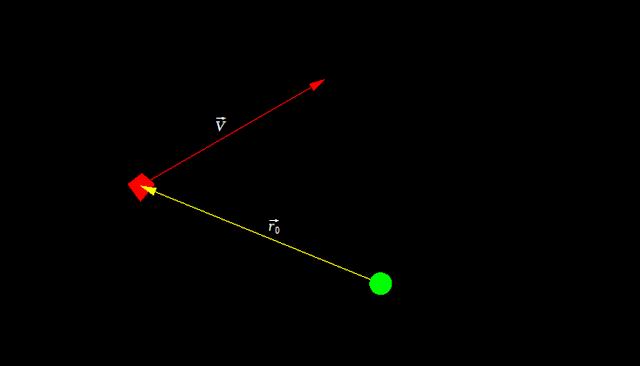
На ответ влияет только взаимное расположение стрелка и цели
На самом деле, уравнения координат цели из аналитического решения - это лишь проекции вот этого векторного уравнения, только в абсолютных координатах:
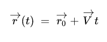
Здесь r(t) - это вектор перемещения от стрелка к цели в момент времени t, иначе говоря стрелка от стрелка до цели (каламбур). И было бы хорошо, если бы в какой то момент времени снаряд оказался на том же месте, тогда это означало бы, что он попал в цель.
Давайте рассмотрим вектор скорости снаряда U, который пока что направлен не весть куда. Тогда вектор перемещения от стрелка до снаряда будет равен:
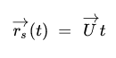
И, приравняв его к r(t), получаем векторное уравнение:
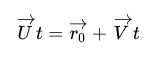
Которое, кстати говоря, если спроецировать на оси и немного пошаманить, то получится то самое квадратное уравнение. Давайте немного преобразуем:
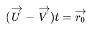
И заметим, что правая и левая части отличаются лишь множителем, а это значит, что они параллельны, а в нашем случае даже сонаправлены (t > 0). На самом деле разность в скобке в левой части - это скорость цели относительно снаряда, и так как изначально их разделяет r0, нам нужно найти время, через которое цель прилетит прямо в горячие объятия снаряда.
Но если бы было так просто, то я бы тут не распинался. Давайте рассуждать дальше и вспомним, что если векторы параллельны, то их векторное произведение равняется нулевому вектору. Запишем и преобразуем:
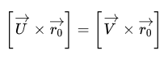
Заметим, что произведение в правой части нам известно, а вот что делать с левой до сих пор не ясно. Давайте введем ось OZ, направленную на рисунке на нас и спроецируем уравнение на нее. Запишем проекции:
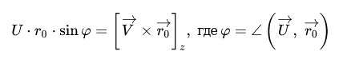
И вуаля - мы избавились от вектора и перешли к углу, найдя который выстрелим по направлению к цели. Найдем отсюда sin φ:
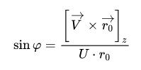
Теперь все, что нам осталось, получить вектор U. Длина нам дана, а направление мы узнаем, повернув вектор r0 на угол φ. Однако есть три проблемы:
Перед тем как приступить к решению второй проблемы, предлагаю немного посмотреть на эту "стрельбу в прошлое". Справа - то, как выстрел видит формула, слева - куда она стреляет на самом деле:
Но, к сожалению, в прошлое умею смотреть только я, поэтому давайте отучим формулу его видеть. Для этого предлагаю спроецировать изначальное векторное уравнение на вектор r0 и затем выразить оттуда время, которое и будем сравнивать с нулем:
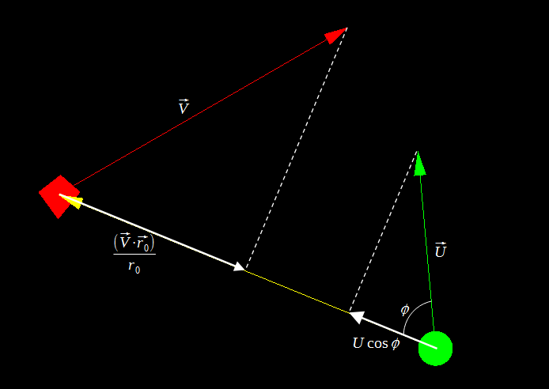
Величины проекций
Найдем косинус через основное тождество:
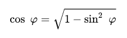
Знак косинуса нас не интересует лишь по той причине, что arcsin φ возвращает значение из правой части тригонометрической окружности, в которой косинус неотрицателен. Итак, запишем спроецированное уравнение:
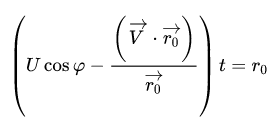
И заметим, что множитель перед t опять может равняться нулю. И что, снова выпадает какой то вариант? Оказывается, что нет, ведь в данном случае нас не интересует точное значение времени, нам нужно определить его знак. Правая часть уравнения всегда положительна, а это значит, что знак t определяется множителем перед ним, так что сравним с нулем именно его, и пусть он будет даже ноль - ничего страшного.
Как видите, векторное решение оказалось гораздо проще и изящнее, как я и обещал, причем без всяких ограничений. Наконец запишем все наши выкладки в коде в виде небольшой функции:
func get_shoot_vector(u:float, v:Vector2, r0:Vector2):
# cross - проекция векторного произведения на ось OZ
var sin_phi : float = v.cross(r0) / (r0.length() * u)
if abs(sin_phi) > 1: # нет решений
return Vector2.ZERO
var cos_phi : float = sqrt(1 - sin_phi**2)
# знак tsing такой же, как и у времени
var tsign : float = u*r0.length()*cos_phi - v.dot(r0)
if tsign < 0:
return Vector2.ZERO
# не забываем про минус
return r0.rotated(-asin(sin_phi)).normalized()
Теперь мы можем то, чего не могли ранее - делать скорость снаряда и цели одинаковой:
См. Кажется где то я это уже видел.gif
Несмотря на хороший результат, этот метод можно применять только для прямолинейного движения цели. Честно говоря не знаю, где может пригодиться поиск упреждения по цели, движущейся, скажем, по синусоиде, но это тоже более чем возможно.
Теперь пусть объект двигается вдоль некоторой кривой, заданной параметрически:
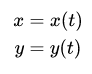
Которую мы будем считать непрерывной по условию задачи, ведь она описывает движение "реального" объекта. А снаряд все так же движется равномерно и прямолинейно.
Первое, что лично мне пришло в голову - это составить функцию расстояния, зависящую от двух переменных - времени и угла выстрела - и уже анализировать ее. Сначала я так и сделал, но скорость работы была весьма скудной - ~2ms даже для простых случаев.
Былого потом я вспомнил про первый метод, который никто не мешает применить и в общем случае, и он позволил снова избавиться от угла и свести решение к задачи оптимизации функции одной переменной.
Итак, составим функцию расстояния от цели до "фронта" всех снарядов:
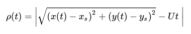
Тогда решив уравнение ρ(t) = 0 мы нашли бы время, через которое объект окажется в точке в которую следует сделать выстрел для попадания. Однако и при прямолинейном движении решение этого уравнение не всегда существует, чего уже говорить про общий случай.
Поэтому мы будем искать глобальный минимум этой функции на некотором отрезке (0; tmax], и если это будет не ноль, то стрелок выстрелит хотя бы так, чтобы снаряд пролетел максимально близко к цели.
Стоит заметить, что функция ρ(t) не обязательно является гладкой из-за модуля, так что для оптимизации я буду использовать метод нулевого порядка, а именно метод золотого сечения, в первую очередь в силу его простоты, скорости и несильной требовательности к локализации задачи.
Если кратко, как работает этот метод: рассматриваем две точки x1 и x2 между a и b, удовлетворяющих правилу золотого сечения деления отрезка [a; b]. Если в левой точке значение функции меньше, чем в правой, то перемещаем правую границу поиска на правую точку, иначе перемещаем левую границу на левую точку, и так до тех пор, пока длина отрезка поиска не станет удовлетворять заданной точности. Метод как бы "скатывается" в яму, а затем просто уточняет результат. Вот только не надо говорить, что так работает почти любой метод оптимизации.
Реализуется метод так же просто, как и звучит:
# f - "ссылка" на оптимизируемую функцию
# a, b - границы изначального отрезка, eps - точность
func optimize(f:Callable, a:float, b:float, eps:float):
const PHI : float = 1.618033988749
# можно смотреть и на разность значений функции,
# просто тогда код удлиняется из-за запоминаний значений
while (b-a) > eps:
var x1 = b - (b-a)/PHI # левая точка
var x2 = a + (b-a)/PHI # правая точка
if f(x1) < f(x2):
b = x2
else:
a = x1
return (a+b)/2
Передаем в него функцию ρ, промежуток (0; tmax], требуемую точность и получаем время, через которое объект будет в месте поражения. Давайте отбросим вопросы реализации движения объектов, нахождения направления и прочего и просто полюбуемся этой красотой:
См. И правда стреляем в будущее.gif
В этом случае цель двигалась по вот такой кривой:
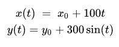
Теперь давайте рассмотрим немного более значимый пример. Чтобы еще сильнее не утомлять вас числами, точные параметры системы я писать не буду, рассмотрим его качественно. Выглядит это дело как то так:
Если вы посмотрите повнимательнее, то заметите, что попадания не было. Расчет показывает, что расстояние до цели было ~90 игровых пикселей. Почему так? Видно же, что попасть точно можно было.
В начале я заикнулся про глобальный минимум, а любой метод оптимизации ищет локальный и при большом количестве таковых поиск глобального затрудняется. Тут проблема именно в этом, достаточно взглянуть на график y = ρ(x) и все сразу станет ясно:
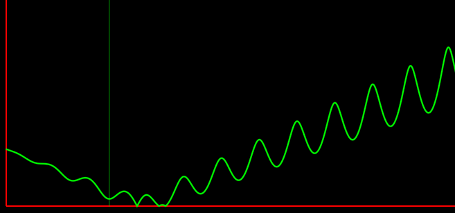
Масштаб я и сам не знаю какой
Блеклая зеленая прямая указывает на минимум, найденный нашим методом. У нас было целых три различных варианта для выстрела с точным попаданием, а метод нашел непойми что! На самом деле это просто крайне удачное стечение обстоятельств: если поменять значение tmax с 30 до, хотя бы, 30.1 то метод сразу находит верное, хоть и не наилучшее решение (третий ноль).
Тут, на самом деле, что делать с этим уже решать вам, ведь все упирается в оптимизацию, я лишь могу предложить простейший вариант: разбить исходный отрезок на N других, на каждом из них найти минимум, а затем из всех выбрать наименьший.
Но тогда количество вызовов optimize возрастает и вычисления замедляются, так что тут зависит от того, что вам нужно - точность или скорость. Однако стоит сказать, что в играх точность вычислений обычно не сильно нужна - ну будет минимальное расстояние не 0.00008px, а 1.2px, что так что так попадание по модельке будет. Поэтому погрешность вычислений достаточно взять что-то вроде 0.1 и не переживать.
Код этого способа не сложнее метода оптимизации:
func global_optimize(f:Callable, a:float, b:float, eps:float):
const N : int = 5
var tmin : float = 0.0
var d : float = (b-a)/N
for i in range(0, N):
var ires : float = optimize(f, a + d*i, a + d*(i+1), eps)
if f(ires) < f(tmin):
tmin = ires
return tmin
Теперь минимум находится нормально уже при N = 2, то есть всего на один вызов больше. Давайте посмотрим:
См. В яблочко.gif
Если вы хотите находить всегда наилучшее решение, то есть самый левый ноль, то тут уже придется что-то шаманить с точностью и опять таки повторными вызовами optimize, но это пускай остается за ширмой. Вместо этого давайте напоследок посмотрим еще примеры. Не знаю, что насчет вас, но для меня этот почти как котики - не мило, но смотреть можно бесконечно:
См. Окружность.gif
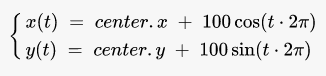
См. Бесконечность.gif
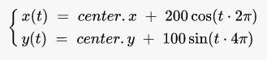
См. Экспонента.gif
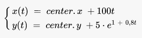
Кажется все
Как можно заметить по мере чтения, чем новее способ - тем меньше трудозатрат. Вначале огромный анализ квадратного уравнения с кучей различных вариантов, затем несложное решение векторного уравнения лишь с парочкой шероховатостей, а в конце простейшее решение с очень приятным результатом в виде поиска минимума, а не просто "извини, решений нет". Это что-то да значит.
Никакого кода проекта не будет, потому что эта статья скорее про математику - а она то точно не нуждается в исходниках. Хочется верить, что обильное снабжение картинками сделало ее не такой скучной, какой она обычно представляется.
{kind=link}
{kind=link}
{kind=link}
{kind=link}
{kind=link}
{kind=link}